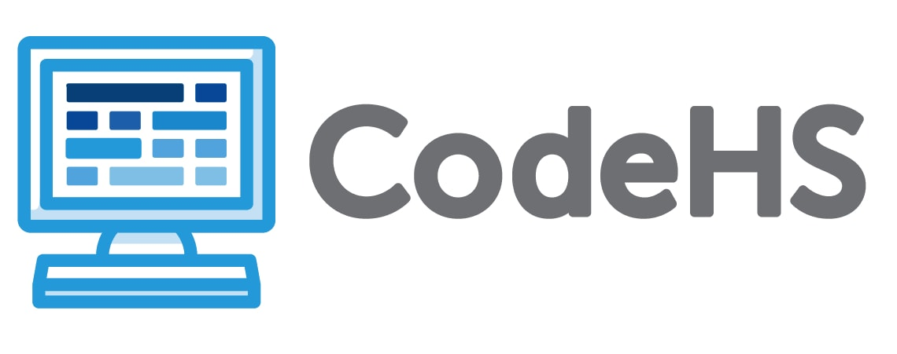

School: 2022 - 2023
Below is the list of classes I have taken this year, including my optional 8th period, Affinity Mentorship in which I work with other students from marginalized groups to make the community a safe, inclusive space for all (DEI work). I have enjoyed many of my classes this year, but Affinity Mentorship has been my favorite since it is all about bettering the community and assisting the future generations at the highschool, since, hopefully, by the time the elementary schoolers reach Freshman year, all acts of hate will have disappeared. I look forward to taking mentorship next year as well as AP United States History and Honors English since I have a newfound love for literature and historical analysis.
Affinity Mentorship Program
Modern World History
Spanish 3
AP Computer Science Principles

Honors Chemistry
Acting II (1st semester)
Health Science/Social Psychology (2nd semester)
English 3/4